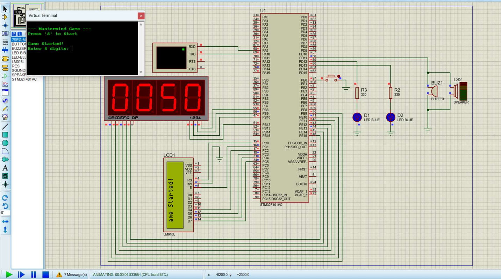
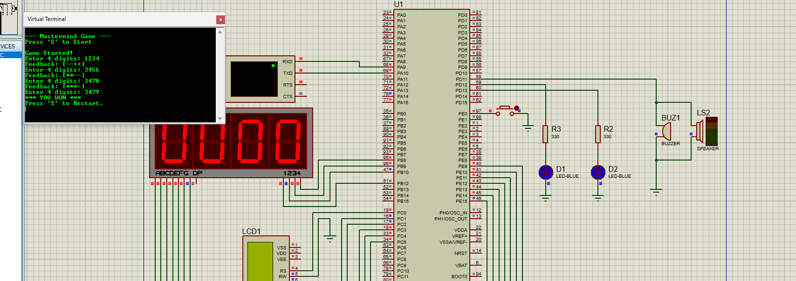

STM32 Game State
WAIT_START, PLAYING, and GAMEOVER states are represented visually.
Microcontroller project plus browser simulation
A polished web interface for an STM32F401 Mastermind bomb defusal game, with USART-style input, LCD feedback, seven-segment countdown, EXTI rescue logic, LEDs, buzzer states, and a real-time teaching panel.
--- Mastermind Game ---
Press 'S' to Start
Game Started!
Enter 4 digits: 7318
Feedback: [-++]
Project Overview
The original firmware runs on STM32F401 and implements a Mastermind-style game. This web interface translates the same game logic into a browser experience so visitors can understand the project without opening Proteus or flashing a board.
WAIT_START, PLAYING, and GAMEOVER states are represented visually.
USART, TIM2, EXTI0, and GPIO activity indicators pulse during play.
LCD text, LEDs, buzzer, and seven-segment timer mirror the firmware outputs.
Runs as static HTML, CSS, and JavaScript with no backend or database.
Architecture Visualization
Features and Specifications
Generated on game start, matching the embedded project behavior.
`*`, `+`, and `-` feedback uses the same exact-then-misplaced algorithm.
Timer and pressure meter make the bomb-defusal gameplay readable at a glance.
Two-use rescue button simulates EXTI behavior with +15s and +5s bonuses.
Optional secret reveal and feedback explanation help explain the algorithm.
Theme toggle is saved locally and designed for presentation screenshots.
Technologies Used
How It Works
User sends `S` or presses the start button.
The system creates a hidden 4-digit code.
User submits exactly four digits through the terminal UI.
Exact matches are marked first, then misplaced digits are checked.
Win before timeout, or trigger BOOM when the countdown reaches zero.
Interactive Web Demo
USART1 input and firmware messages
Keyboard: press S to start, digits to type, Enter to submit, Backspace to edit.
Feedback follows the STM32 firmware rules
| # | Guess | Feedback | Exact | Misplaced |
|---|
Gallery


GitHub Repository